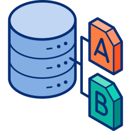

En Android, la multitarea y el control de concurrencia son fundamentales para permitir que varias aplicaciones y procesos funcionen de manera simultánea, manteniendo un buen rendimiento y una experiencia fluida para el usuario.
La concurrencia en Android es la capacidad que tiene el sistema operativo para ejecutar varias tareas de manera simultánea sin que la interfaz de usuario se bloquee. Cuando se inicia una aplicación, Android crea un hilo principal llamado UI Thread, encargado de manejar toda la lógica visual, la interacción con los botones, los textos y los eventos que el usuario realiza. Si este hilo se ocupa realizando tareas pesadas, como cálculos complejos o descargas, la aplicación puede dejar de responder, mostrando el mensaje “La aplicación no responde” (ANR).

Android gestiona los procesos mediante un sistema jerárquico de prioridades, en el cual cada proceso recibe un nivel de importancia según su función y su relación con el usuario. Esto permite que el sistema optimice el uso de la memoria y mantenga la experiencia del usuario fluida.
Es el que el usuario está utilizando directamente, como la aplicación abierta en pantalla con la que interactúa. Tiene la máxima prioridad y solo se cerrará en situaciones extremas de falta de memoria.
Aunque no esté en primer plano, sigue siendo perceptible para el usuario, como cuando una app muestra un cuadro de diálogo sobre otra aplicación. Este tipo de proceso tiene prioridad alta porque la experiencia del usuario podría verse afectada si se cierra.
Realiza tareas en segundo plano que no requieren interacción directa, como reproducir música, sincronizar datos o descargar archivos. El sistema mantiene estos procesos activos mientras haya recursos disponibles y su tarea sea importante.
Contiene actividades pausadas o datos que el usuario podría volver a usar pronto. Su prioridad es menor, por lo que se puede cerrar para liberar memoria si es necesario, pero normalmente conserva información temporal para que la app se reanude rápidamente.
No tiene ninguna actividad activa y solo mantiene datos en memoria temporal. Es el primer tipo de proceso que Android puede eliminar cuando necesita liberar recursos. Cuando el sistema detecta escasez de memoria, cierra primero los procesos de menor prioridad, preservando los que afectan directamente la experiencia del usuario. Además, Android implementa mecanismos de concurrencia y multitarea, usando hilos, Handlers, Loopers y servicios, que permiten que cada proceso ejecute varias tareas simultáneamente sin bloquear la interfaz de usuario ni interferir con otras aplicaciones.
Gracias a que la interfaz de usuario se ejecuta en un hilo principal independiente de los procesos en segundo plano, las aplicaciones no se “congelan” al realizar tareas largas, como descargar archivos o cargar datos.
Android permite que varios procesos e hilos trabajen al mismo tiempo usando Handlers, Loopers, Services y Corrutinas, lo que hace posible que la app realice varias operaciones sin afectar el rendimiento general.
El sistema administra automáticamente los procesos según su prioridad, cerrando primero los de menor importancia para liberar memoria sin perjudicar al usuario.
Los procesos en segundo plano o en caché mantienen datos temporales, por lo que, al volver a abrir una app, esta puede reanudarse rápidamente desde donde se dejó.
Servicios en primer plano y frameworks como WorkManager permiten que las apps continúen ejecutando tareas importantes, aunque el usuario no esté interactuando directamente con ellas.
Gestionar correctamente hilos, servicios y comunicación entre procesos puede ser complicado, especialmente para aplicaciones grandes o con tareas concurrentes complejas.
Aunque Android prioriza los procesos importantes, en dispositivos con poca memoria o procesadores más lentos, las tareas en segundo plano pueden ser eliminadas antes de completarse.
La concurrencia mal gestionada puede causar condiciones de carrera, bloqueos o inconsistencias en los datos, lo que obliga al desarrollador a usar cuidadosamente Handlers, Runnable y otras herramientas.
Algunas soluciones de multitarea, como AsyncTask (obsoleta en versiones recientes), tienen limitaciones y requieren que el desarrollador aprenda frameworks más avanzados como HaMeR, WorkManager o Corrutinas para un control completo.
Ejecutar múltiples procesos en segundo plano puede consumir más batería si no se optimiza adecuadamente, lo que puede afectar la experiencia del usuario en dispositivos móviles.
El ciclo de vida de un proceso en Android no es lineal ni controlado directamente por el desarrollador, sino que es gestionado por el sistema operativo en función de la prioridad y el uso de recursos. Un proceso pasa por estados como creación, ejecución en primer plano, visible, servicio, segundo plano y en caché. Cuando el sistema necesita memoria, elimina automáticamente los procesos de menor prioridad mediante el mecanismo conocido como Low Memory Killer, garantizando así el rendimiento y la estabilidad del sistema.
El proceso se crea cuando se abre una aplicación por primera vez, utilizando el mecanismo Zygote para optimizar el tiempo de carga.
La aplicación está en uso directo por el usuario. Tiene la mayor prioridad y no se elimina fácilmente.
La app no está en uso directo, pero sigue siendo visible en pantalla, como en multitarea.
El proceso ejecuta tareas en segundo plano sin interfaz, como reproducción de música o descargas.
La app ya no es visible, pero conserva datos o estado. Puede ser eliminada si el sistema necesita memoria.
No realiza ninguna tarea, solo se mantiene en memoria para una apertura más rápida.
Android elimina procesos de baja prioridad mediante el Low Memory Killer cuando se requiere liberar recursos.
👉 Se eliminan de abajo hacia arriba
El ciclo de vida de una Activity en Android está compuesto por una serie de métodos que controlan el comportamiento de la interfaz de usuario. Estos métodos incluyen onCreate, onStart, onResume, onPause, onStop y onDestroy, y permiten gestionar los estados de la aplicación desde su creación hasta su finalización. Este ciclo no representa el proceso completo de la aplicación, sino únicamente la interacción de la pantalla con el usuario.
Se crea la Activity, se inicializan variables, lógica y se define la interfaz.
La Activity se vuelve visible, aunque aún no está lista para interacción.
La Activity pasa a primer plano y el usuario puede interactuar con ella.
La Activity pierde el foco; puede seguir visible parcialmente.
La Activity deja de ser visible y libera recursos no esenciales.
La Activity estaba detenida y se prepara para volver a primer plano.
La Activity se destruye definitivamente y se liberan todos los recursos.
onCreate → onStart → onResume
onPause → onStop
onRestart → onStart → onResume
onDestroy
Android está diseñado para ejecutar varias aplicaciones y procesos al mismo tiempo, lo que se conoce como multitarea. Esto es posible gracias a su arquitectura basada en el kernel de Linux, que permite crear y administrar múltiples procesos de manera independiente. Cada aplicación en Android se ejecuta en su propio proceso, con su máquina virtual (ART o Dalvik) y su propia memoria asignada. De esta forma, si una app falla, no afecta a las demás. El sistema se encarga de mantener activas las aplicaciones más recientes o las que están en uso, mientras que las que están en segundo plano pueden ser suspendidas o detenidas para liberar memoria si el dispositivo lo necesita. El sistema también emplea técnicas de concurrencia y multiprocesamiento, permitiendo que una app pueda ejecutar varias tareas a la vez dentro de su propio proceso (por ejemplo, escuchar música mientras se navega por internet). Esto se logra mediante hilos (threads) y servicios en segundo plano, los cuales permiten que diferentes acciones ocurran al mismo tiempo sin bloquear la interfaz del usuario.